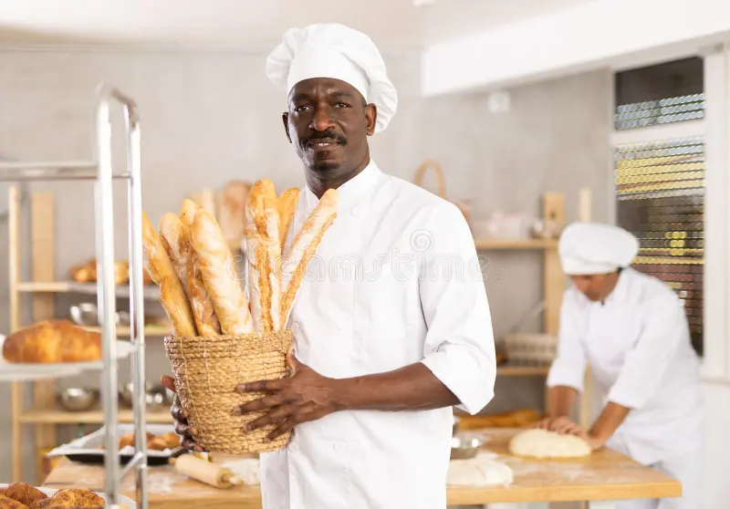

Our Story

Founded in 2022, PoshBakehouse started in a small kitchen with one goal: to bake happiness. What began as custom birthday cakes for friends has grown into Johannesburg's favourite boutique bakery.
Our Mission
To create beautiful, delicious baked goods that bring people together and make every occasion special.
Our Vision
Head Baker Sarah Mokoena - 10 years experience in French patisserie